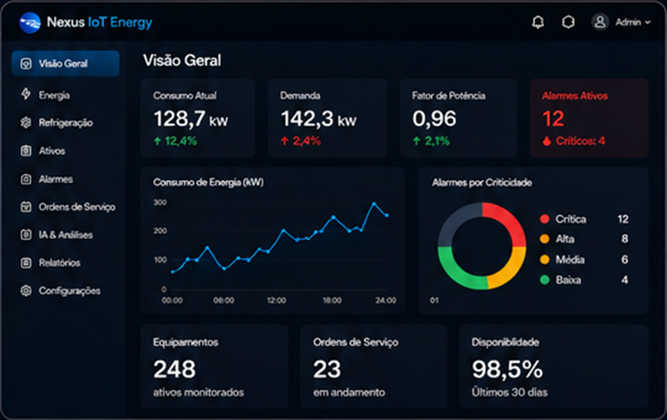
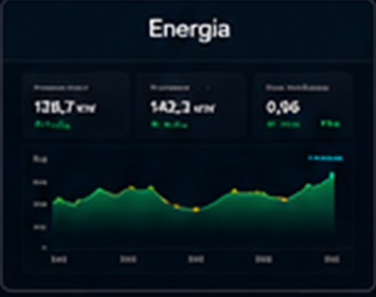
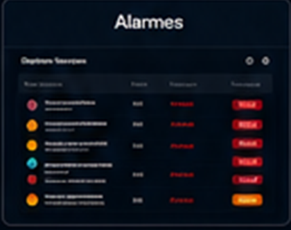
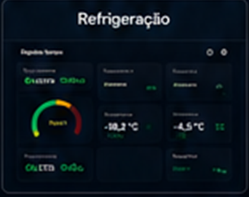
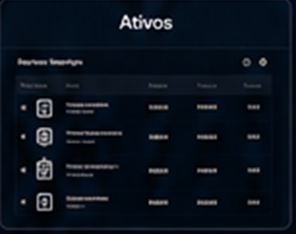
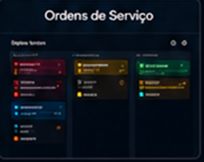
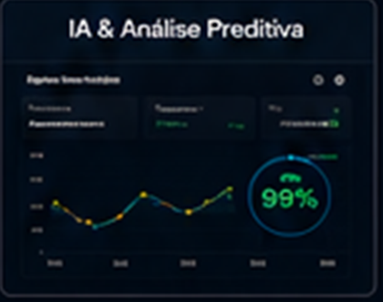

Reduza custos com energia e evite falhas críticas
Em supermercados, centros de distribuição e operações refrigeradas com monitoramento inteligente em tempo real.
Monitore energia, refrigeração, ativos críticos, alarmes e manutenção em uma única plataforma inteligente com dashboards, alertas e indicadores para decisões rápidas.

Empresas que confiam na Nexus IoT Energy
Funcionalidades
Redução de custos
Identifique desperdÃcios e reduza custos com energia elétrica e refrigeração.
Menos falhas
Antecipe problemas e evite paradas não planejadas.
Alertas em tempo real
Receba notificações instantâneas sobre anomalias.
Controle de ativos
Tenha visibilidade dos equipamentos e dispositivos IoT.
Manutenção organizada
Gere tarefas, acompanhe execução e aumente produtividade.
Relatórios executivos
Dashboards automáticos para decisões estratégicas.
Como funciona
Conectamos seus equipamentos
Centralizamos todos os dados
Você recebe alertas e indicadores em tempo real
Tudo que sua operação precisa em um único painel.
Energia

Alarmes

Refrigeração

Ativos

Ordens de Serviço

IA & Análise Preditiva

Por que escolher a Nexus IoT Energy?
IA Industrial
Algoritmos avançados para prever falhas e gerar insights.
MQTT
Comunicação leve, segura e confiável em tempo real.
Modbus
Integração com equipamentos novos e legados.
Multiempresa
Gestão centralizada de múltiplas unidades e times.
Dashboards
Visualizações personalizadas e interativas.
Alarmes Inteligentes
Alertas com contexto, criticidade e ação recomendada.
Gestão de Ativos
Controle completo do ciclo de vida dos equipamentos.
Monitoramento 24h
Sua operação segura e conectada todos os dias.
Setores que já transformam sua operação com o Nexus
Muito além de um dashboard
O Nexus IoT Energy une IoT, energia, refrigeração, manutenção e inteligência artificial para transformar dados de campo em decisões, economia e previsibilidade operacional.
Resultados reais que geram impacto
TERCA ZILLI
Métricas autorizadas pendentes. Espaço reservado para atualizar consumo, disponibilidade e retorno quando aprovado.
MetalTrade
Métricas autorizadas pendentes. Espaço reservado para atualizar operação, alertas e ganhos quando aprovado.
Casagrande Supermercados
Métricas autorizadas pendentes. Espaço reservado para atualizar refrigeração, energia e disponibilidade quando aprovado.
Dúvidas frequentes
A equipe avalia a operação, conecta os equipamentos compatíveis e configura os painéis para acompanhamento dos indicadores.
A plataforma foi preparada para integração com medidores, controladores, sensores e equipamentos industriais por protocolos como MQTT e Modbus.
O prazo depende da quantidade de unidades, equipamentos e integrações. A implantação é planejada para começar com rapidez e evoluir por etapas.
Na maioria dos cenários, a Nexus IoT Energy aproveita equipamentos existentes e adiciona conexões apenas quando necessário.
O suporte acompanha a operação, apoia ajustes de indicadores e ajuda sua equipe a interpretar alertas, dashboards e prioridades.
O monitoramento em tempo real depende de conectividade. Em projetos específicos, a arquitetura pode prever retenção local e sincronização posterior.
Pronto para reduzir custos e aumentar a confiabilidade da sua operação?
Solicite uma demonstração personalizada e veja na prática como a Nexus IoT Energy pode transformar seus resultados.